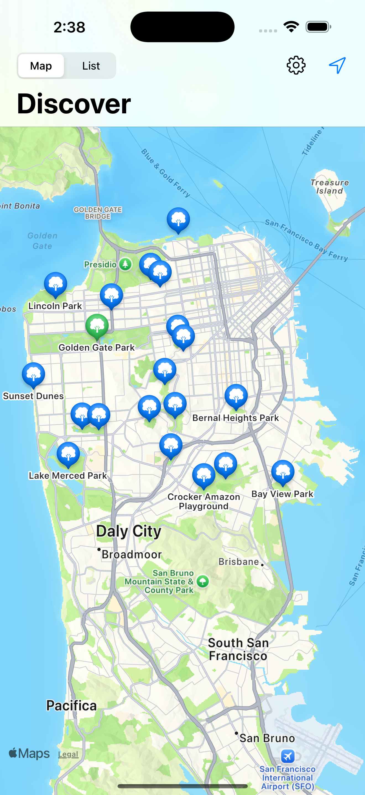

Fog & Fern
Explore every park in San Francisco—one step at a time.
Fog & Fern is your companion for discovering the green spaces that make the city special. Whether you're looking for a weekend walk, a quiet pocket park, or aiming to visit every park in town, this app makes exploration simple and rewarding.

Features
- 🗺️ View a complete map of San Francisco's public parks
- ✅ Track which parks you've visited
- 📍 Get directions with one tap
- ☁️ iCloud sync keeps your progress safe and private
Support
Need help? Visit our Support Page.
Privacy Policy
Read our Privacy Policy.